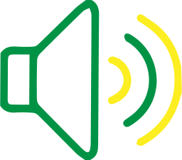
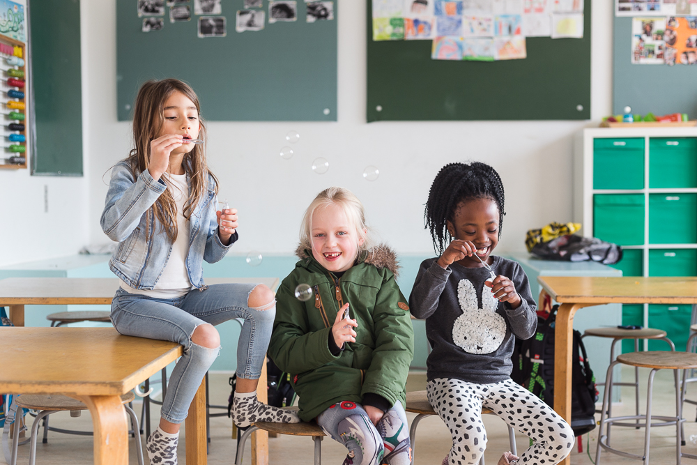

For the best experience, please open this page on a wider screen.

Audio is included
Scroll to begin
The International Classroom
Where learning is more than textbook.
Joining a Classroom in a New Country Can Be an Exciting Adventure.
At Kochs Skole we accomodate an open environment based on fellowship, creativity and the desire to create. We provide a globally recognized education in a personalized setting. Students can enter from their previous levels and adjust to the pace slowly whilst settling in and learning the Danish language.
Bilingual Teaching
Next to our English curriculum, international students are encouraged to learn Danish by attending classes held in Danish and interacting with Danish students. We get to see how children adapt to speaking multiple languages with each other and how quickly the children make friends without being worried about language barriers.
Joining a Classroom in a New Country
Experiencing children of different age groups from diverse backgrounds interact with each other before is what we consider our biggest achievement. Their judgement-free curiosity is what will stay with us. Their open minds and thoughtful care for each other is nothing less than inspiring.

Hear about the benefits of studying at an international school from one of our international teachers:
“[The kids] are used to making friendships quickly, they don’t exclude anybody if they are new. They welcome them in and they quickly become friends. ” - Paul Jonathan Bish
Inspire to Desire
Our teachers leave school everyday with fuller hearts, inspired by the simplicity of building friendships. By Kochs Skoles ambition to create an open environment where questions can be asked and guidance is given from an observant perspective, students develop their strengths, follow their curiosity and enhance the collective with their individual skills with great compassion for each other.
“We like working in teams because we are friends.” - Ahmed